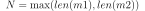
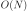
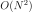
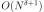
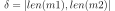

Distance entre deux mots de même longueur et tests unitaires#
Calculer une distance entre deux mots n’est pas le plus intuitif des problèmes. Dans ce notebook, on se permet de tâtonner pour faire évoluer quelques idées autour du sujet. C’est l’occasion aussi de montrer à quoi servent les tests unitaires et pourquoi ils sont utiles lorsqu’on tâtonne.
[1]:
from jyquickhelper import add_notebook_menu
add_notebook_menu()
[1]:
Distance naïve#
Naïf… mais beaucoup d’idées naïves finissent par aboutir à des pyramides complexes.
Distance très naïve#
On se restraint au cas où les deux mots à comparer ont la même longueur. Et dans ce cas, le plus simple est de compter le nombre de caractères différents à chaque position.
[2]:
def distance1(m1, m2):
d = 0
for i in range(0, len(m1)):
if m1[i] != m2[i]:
d += 1
return d
distance1("info", "imfo")
[2]:
1
Distance entre deux mots de longueur différente mais pas si différente#
On considère le cas où les deux mots ont des longueurs égales ou différentes de un caractères. Dans le premier cas, on utilise la distance précédente, dans le second cas, on ajoute un espace au mot le plus court et on appelle la distance précédente. Mais où insérer cet espace ? A toutes les positions bien sûr, la distance sera le minimum de toutes les distances calculées.
Pour simplifier, on commence par décider que le premier mot doit être le plus court des deux. Si ce n’est pas le cas, on les permute.
[3]:
def distance2(m1, m2):
if len(m1) == len(m2):
return distance1(m1, m2)
if len(m2) < len(m1):
m1, m2 = m2, m1
meilleur = len(m2)
for i in range(len(m1) + 1):
m1_e = m1[:i] + " " + m1[i:]
d = distance1(m1_e, m2)
if d < meilleur:
meilleur = d
return meilleur
distance2("cab", "ab")
[3]:
1
[4]:
distance2("abcd", "bcdef")
[4]:
5
Parfois on aime bien comprendre un peu plus en détail. On ajoute alors un paramètre verbose qui affiche des informations sans pour autant affecter le résultat.
[5]:
def distance2_verbose(m1, m2, verbose=False):
if len(m1) == len(m2):
return distance1(m1, m2)
if len(m2) < len(m1):
m1, m2 = m2, m1
meilleur = len(m2)
for i in range(len(m1) + 1):
m1_e = m1[:i] + " " + m1[i:]
d = distance1(m1_e, m2)
if d < meilleur:
meilleur = d
if verbose:
print("i=%r m1_e=%r m2=%r d=%d meilleur=%d" % (i, m1_e, m2, d, meilleur))
return meilleur
distance2_verbose("cab", "ab", True)
i=0 m1_e=' ab' m2='cab' d=1 meilleur=1
i=1 m1_e='a b' m2='cab' d=2 meilleur=1
i=2 m1_e='ab ' m2='cab' d=3 meilleur=1
[5]:
1
Le paramètre verbose est une sorte de règle communément partagée, une convention… C’est ce que qu’en disent les pirates.
Distance entre deux mots de longueur différente#
On suit la même idée et on insère des espaces dans le mot le plus petit de façon récursive jusqu’à pouvoir utiliser la distance précédente. Le code ressemble beaucoup à la fonction précédente.
[6]:
def distance3(m1, m2):
if abs(len(m1) - len(m2)) <= 1:
return distance2(m1, m2)
if len(m2) < len(m1):
m1, m2 = m2, m1
meilleur = len(m2)
for i in range(len(m1) + 1):
m1_e = m1[:i] + " " + m1[i:]
d = distance3(m1_e, m2)
if d < meilleur:
meilleur = d
return meilleur
distance3("info", "pimfos")
[6]:
3
Test unitaires#
Quand on développe un algorithme, on l’applique sur quelques exemples pour vérifier qu’il marche… Puis, on l’améliore et on vérifie qu’il fonctionne sur de nouveaux exemples plus complexes… Vérifie-t-on que cela marche fonctionne encore pour les premiers cas… Le plus souvent non… car c’est fastideux… J’en conviens… Alors pourquoi ne pas noter tous ces cas dans une fonction qui les vérifie… La fonction ne prend aucun paramètres, elle réussit si la fonction retourne tous les résultats désirés, elle échoue dans le cas contraire.
[7]:
def test_dist_equal(d):
assert d("", "") == 0
assert d("a", "a") == 0
assert d("a", "b") == 1
def test_distance1():
test_dist_equal(distance1)
test_distance1()
Pas d’erreur… On continue avec la seconde distance en ajoutant des cas pour lesquels elle a été programmée. Pour les tests, on utilise un caractère '_' différent des espaces ' ' utilisé par les fonctions distance.
[8]:
def test_dist_diff1(d):
assert d("", "a") == 1
assert d("a", "") == 1
assert d("_a", "a") == 1
assert d("a_", "a") == 1
assert d("a", "a_") == 1
assert d("a", "_a") == 1
def test_distance2():
test_dist_equal(distance2)
test_dist_diff1(distance2)
test_distance2()
Toujours pas d’erreur… La vie est magnifique… On continue avec la troisième distance en ajoutant des cas pour lesquels elle a été programmée.
[9]:
def test_dist_diff2(d):
assert d("", "ab") == 2
assert d("ab", "") == 2
assert d("_ab", "a") == 2
assert d("ab_", "ab") == 1
assert d("ab", "ab_") == 1
assert d("ab", "_ab") == 1
assert d("ab", "ab") == 0
assert d("ab", "a_b") == 1
assert d("a_b", "ab") == 1
def test_distance3():
test_dist_equal(distance3)
test_dist_diff1(distance3)
test_dist_diff2(distance3)
test_distance3()
Toujours pas d’erreur… Magnifique… Et maintenant… Il est vrai qu’on ne s’est pas penché sur les coûts de chaque fonction mais la fonction distance3 est incroyablement longue. On note .
coût
distance1: coût
distance2: coût
distance3:  où .
Je vous laisse quelques minutes pour vérifier. J’interprète : c’est beaucoup trop.
Distance d’édition#
On implémente l’algorithme de la distance de Levenstein.
[10]:
import numpy
def edit_distance(m1, m2):
mat = numpy.zeros((len(m1) + 1, len(m2) + 1))
for i in range(len(m1) + 1):
mat[i, 0] = i
for j in range(len(m2) + 1):
mat[0, j] = j
for i in range(1, len(m1) + 1):
for j in range(1, len(m2) + 1):
c1 = mat[i - 1, j] + 1
c2 = mat[i, j - 1] + 1
if m1[i - 1] == m2[j - 1]:
c = 0
else:
c = 1
c3 = mat[i - 1, j - 1] + c
mat[i, j] = min([c1, c2, c3])
return mat[-1, -1]
print("edit", edit_distance("agrafe", "agrae"))
edit 1.0
On utilise les tests unitaires pour vérifier qu’elle retourne les mêmes résultats, ceux qu’on souhaite.
[11]:
def test_edit_distance():
test_dist_equal(edit_distance)
test_dist_diff1(edit_distance)
test_dist_diff2(edit_distance)
test_edit_distance()
Ca marche…
m et n sont très proches, et alors ?#
[12]:
edit_distance("rémunérer", "rénumérer")
[12]:
2.0
Comme beaucoup de gens font l’erreur, on voudrait que le coût soit réduit de moitié. On veut alors que la confusion entre m et n ait un coût de 0.5.
[13]:
def edit_distance2(m1, m2):
mat = numpy.zeros((len(m1) + 1, len(m2) + 1))
cmp_char = {("m", "n"): 0.5, ("n", "m"): 0.5}
for i in range(len(m1) + 1):
mat[i, 0] = i
for j in range(len(m2) + 1):
mat[0, j] = j
for i in range(1, len(m1) + 1):
for j in range(1, len(m2) + 1):
c1 = mat[i - 1, j] + 1
c2 = mat[i, j - 1] + 1
if m1[i - 1] == m2[j - 1]:
c = 0
else:
c = cmp_char.get((m1[i - 1], m2[j - 1]), 1)
c3 = mat[i - 1, j - 1] + c
mat[i, j] = min([c1, c2, c3])
if i >= 2:
cc = cmp_char.get((m1[i - 2 : i], m2[j - 1]), 1)
c4 = mat[i - 2, j - 1] + cc
mat[i, j] = min(mat[i, j], c4)
if j >= 2:
cc = cmp_char.get((m1[i - 1], m2[j - 2 : j]), 1)
c4 = mat[i - 1, j - 2] + cc
mat[i, j] = min(mat[i, j], c4)
return mat[-1, -1]
print("edit", edit_distance2("rémunérer", "rénumérer"))
edit 1.0
Et toujours les tests unitaires.
[14]:
def test_special(d):
assert d("rémunérer", "rénumérer") == 1
def test_edit_distance2():
test_dist_equal(edit_distance2)
test_dist_diff1(edit_distance2)
test_dist_diff2(edit_distance2)
test_special(edit_distance2)
test_edit_distance2()
ff, f, ph, f… plus personne ne sait écrire#
Tout marche. Et maintenant on aimerait que :
distance('agraffe', 'agrafe') == 0.5distance('agrafe', 'agrae') == 1distance('éléphant', 'éléfant') == 0.5
Nouvelle distance encore.
[15]:
def edit_distance3(m1, m2):
mat = numpy.zeros((len(m1) + 1, len(m2) + 1))
cmp_char = {
("m", "n"): 0.5,
("n", "m"): 0.5,
("ff", "f"): 0.5,
("f", "ff"): 0.5,
("ph", "f"): 0.4,
("ph", "f"): 0.4,
}
ins_char = {}
for i in range(len(m1) + 1):
mat[i, 0] = i
for j in range(len(m2) + 1):
mat[0, j] = j
for i in range(1, len(m1) + 1):
for j in range(1, len(m2) + 1):
c1 = mat[i - 1, j] + ins_char.get(m1[i - 1], 1)
c2 = mat[i, j - 1] + ins_char.get(m2[j - 1], 1)
if m1[i - 1] == m2[j - 1]:
c = 0
else:
c = cmp_char.get((m1[i - 1], m2[j - 1]), 1)
c3 = mat[i - 1, j - 1] + c
mat[i, j] = min([c1, c2, c3])
if i >= 2:
cc = cmp_char.get((m1[i - 2 : i], m2[j - 1]), 1)
c4 = mat[i - 2, j - 1] + cc
mat[i, j] = min(mat[i, j], c4)
if j >= 2:
cc = cmp_char.get((m1[i - 1], m2[j - 2 : j]), 1)
c4 = mat[i - 1, j - 2] + cc
mat[i, j] = min(mat[i, j], c4)
return mat[-1, -1]
print("edit", edit_distance("agrafe", "agrae"))
edit 1.0
Test unitaire again.
[16]:
def test_special(d):
assert d("rémunérer", "rénumérer") == 1
assert d("agrafe", "agrae") == 1
assert d("agraffe", "agrafe") == 0.5
assert d("éléphant", "éléfant") == 0.4
def test_edit_distance3():
test_dist_equal(edit_distance3)
test_dist_diff1(edit_distance3)
test_dist_diff2(edit_distance3)
test_special(edit_distance3)
test_edit_distance3()
[17]: